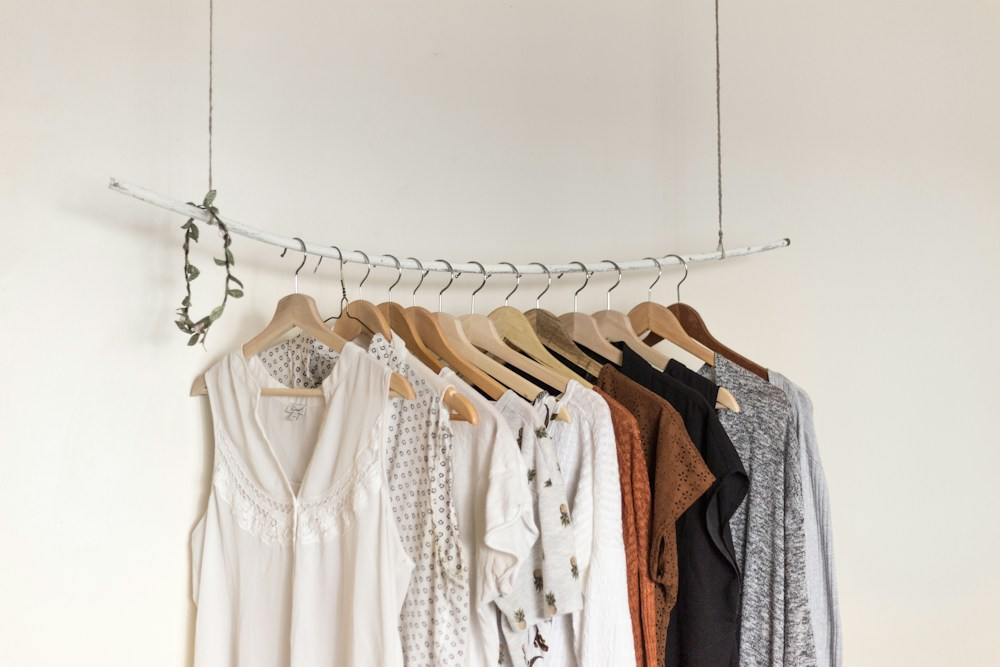
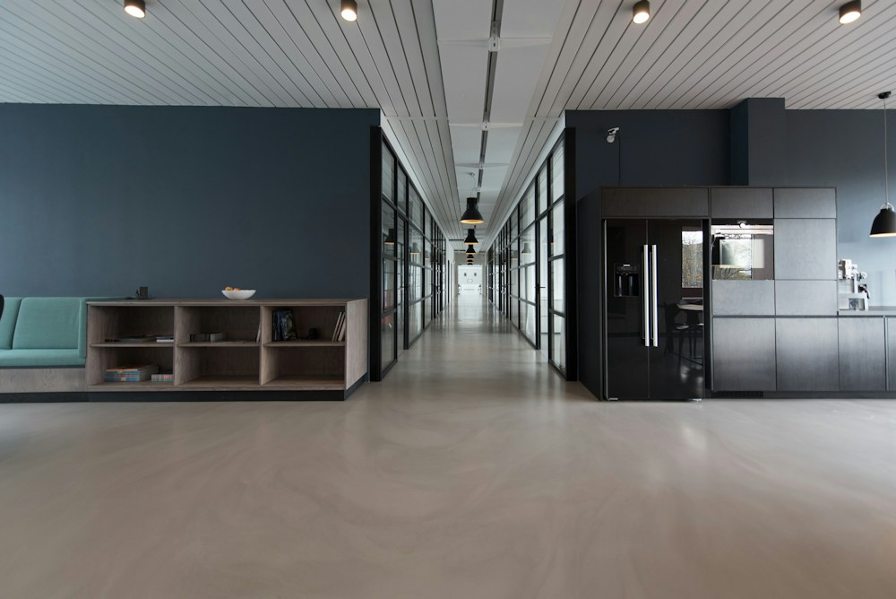

Explore & understand
Cleaning data, investigating patterns, and using statistical thinking to ask meaningful questions.
DATA SCIENCE & ANALYTICS
Hello, I’m Reshmila Erandi — a Physical Science undergraduate exploring the stories behind the numbers and building thoughtful, practical solutions.
Seeking Data Science & Data Analyst internships
01 / ABOUT ME
A thoughtful approach to data,
with a person behind every insight.
I enjoy asking better questions — and finding the patterns that help answer them.
Reshmila ErandiI’m a third-year BSc Physical Science undergraduate at the University of Kelaniya, Sri Lanka, building a path into data analytics.
My studies in Computer Science, Statistics, Pure Mathematics, and Applied Mathematics give me a structured way to approach complex problems. My academic projects put that foundation into practice through Python, SQL, exploratory data analysis, and Power BI.
From garment production to marketplace performance, I’m interested in how careful analysis can make everyday business decisions clearer.
Connect on LinkedInCleaning data, investigating patterns, and using statistical thinking to ask meaningful questions.
Turning analysis into clear charts and Power BI reports that make information easier to understand.
Bringing programming and database skills together to create practical, connected applications.
02 / SELECTED WORK
A selection of academic analytics
and full-stack development projects.
Showing all 4 projects.
DATA ANALYTICS
Making sense of garment production data to uncover productivity trends, identify bottlenecks, and support better planning decisions.
Python · SQL · Pandas · Power BI
View Project
01 / PRODUCTIONBUSINESS INTELLIGENCE
Exploring seller performance, delivery delays, and operational risks through data cleaning, analysis, and Power BI dashboards.
Python · SQL · NumPy · Power BI
View ProjectCUSTOMER INSIGHTS
Finding the story behind the purchase. Exploratory analysis of spending patterns, product preferences, and customer segments.
Python · Pandas · Matplotlib · Seaborn
View ProjectFULL-STACK DEVELOPMENT
A recruitment platform for administrators, employers, and job seekers, with authentication, job listings, and database-backed applications.
PHP · MySQL · JavaScript · Bootstrap
View Project
04 / RECRUITMENTAcademic projects · Photography illustrates each project’s subject.
03 / SKILLS & TOOLS
The tools I work with, from the first
query to the final visualization.
04 / EDUCATION & GROWTH
2023 — 2027
University of Kelaniya
Sri Lanka
Courses and certifications supporting my journey in data.
University of Moratuwa
SCSSA · University of Kelaniya
05 / HOW I THINK
An approach shaped by science,
curiosity, and attention to detail.
Start with the question, the context, and what a useful answer would look like.
Clean and organize the data, checking quality before moving to conclusions.
Look for patterns and relationships using statistics, queries, and visualization.
Bring the findings together into a clear story, report, or practical solution.
06 / LET’S CONNECT
I’m seeking a Data Science or Data Analyst internship where I can learn, contribute, and work with real-world data.
Start a conversation